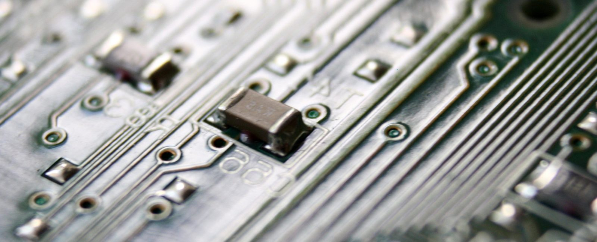

About Us
Our Expertise
Intellectual Inspiration is a technology and innovation consulting firm with deep expertise in all aspects of Intellectual Property (IP) and System-on-Chip technologies (SoCs).
The company has been in existence since 2008, formerly as Green Semiconductor, Inc., and was founded by Dr. Marwan Hassoun. Intellectual Inspiration has experience in all aspects of the semiconductor industry, including building integrated-circuit products involving high-speed analog and digital circuits, networking, communications, processors, co-processors, mobile devices, and RF.
The company has extensive intellectual-property experience, including supporting patent-infringement and trade-secret litigation as expert witnesses, source-code review, prior-art searches, and technology mapping in U.S. District Courts and the International Trade Commission.
